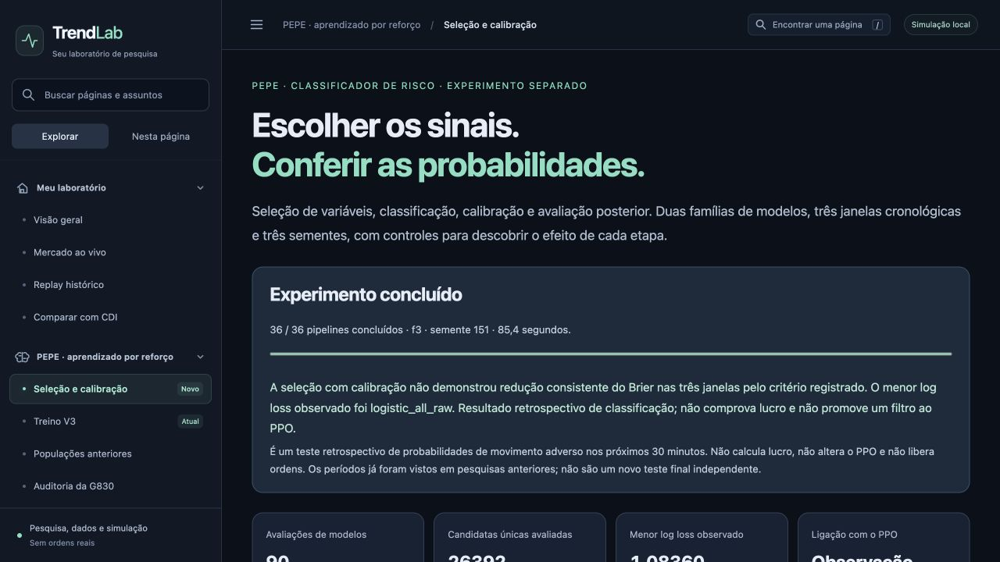

Retrato concluído em 20/10/2026. 36 pipelines, 90 avaliações, três janelas e três sementes; 26.392 candidatas únicas avaliadas.
A seleção com calibração não demonstrou redução consistente do Brier nas três janelas pelo critério registrado. O menor log loss observado foi logistic_all_raw. Resultado retrospectivo de classificação; não comprova lucro e não promove um filtro ao PPO.
Naive Bayes e regressão logística, com 16 variáveis ou seleção L1 no treino; calibração sigmoid em bloco posterior com pipeline congelado. Avaliações: maio–julho/2024, outubro–dezembro/2024 e abril–junho/2025. Agosto/2024 excluído.
Rótulo: excursão adversa nos próximos 30 minutos, relativa a 1,5 ATR. Não é lucro líquido nem garantia de segurança. As janelas já foram pesquisadas; não são um teste final independente. Nenhum filtro PPO foi ativado.
| Variante | Brier | Log loss | Acurácia balanceada |
|---|---|---|---|
| logistic_all_raw | 0.656631 | 1.083599 | 35.8% |
| logistic_selected_raw | 0.656657 | 1.083624 | 35.5% |
| logistic_selected_sigmoid | 0.656715 | 1.083805 | 35.0% |
| logistic_all_sigmoid | 0.656713 | 1.083877 | 35.1% |
| volatility | 0.657860 | 1.085481 | 37.1% |
| nb_all_sigmoid | 0.658786 | 1.087092 | 34.4% |
| nb_selected_sigmoid | 0.658970 | 1.087284 | 34.7% |
| prior | 0.661590 | 1.091172 | 33.3% |
| nb_selected_raw | 0.662983 | 1.100655 | 35.2% |
| nb_all_raw | 0.672017 | 1.118651 | 35.9% |
A seleção ajudou o NB sem calibração; sigmoid ajudou o NB. Acrescentar seleção ao NB já calibrado não demonstrou melhora consistente. Logística com todas as entradas sem calibração teve menor log loss observado; a regra simples de volatilidade teve maior acurácia balanceada. Não houve promoção automática.
Painel interativo local · Método e limitações · Resultados completos · Registro · Hashes dos modelos locais

Pesos, previsões binárias, candles e banco privado permanecem na máquina. Sem ordens reais.